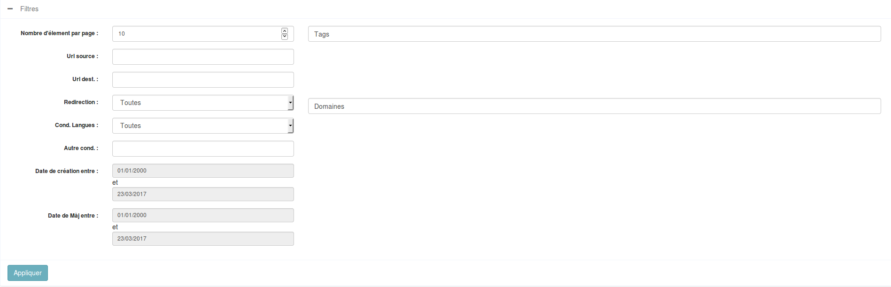

SDV Ng2 Widget est un pack de widget adapté pour bootstrap en angular2
Les widgets génériques sont définis dans le paquet sdv-ng2-widgets
Autocomplete

Le composant d'autocomplete doit être appelé de la façon suivante:
<autocomplete [config]='...' [data]='...' (valid)="function($event)"></autocomplete>
- [data]: Array - tableau contenant les données à traiter par l'autocomplete
- [config]: Object - permet la config du widget, doit contenir:
- fieldDisplayed: String|Array - nom du ou des attributs du tableau data qui sont utilisés à l'affichage dans le champ
- fieldSearch: String - nom de l'attribut du tableau data dans lequel effectuer la recherche (si vide, on prend le fieldDisplayed)
- fieldValue: String - nom de l'attribut du tableau data qui fait office de valeur de retour par le widget (si vide, on renvoi l'objet complet)
- fieldInsert: String - nom de l'attribut du tableau data qui remplacera le placeholder après un clic sur l'un des résultats (si vide, on insert le fieldDisplayed)
- fieldDefault: String - La chaîne affichée lorsque aucune valeur n'est sélectionnée. Vaut Aucun par défault
- begin: Number - nombre de caractères à entrer dans le champ avant que l'autocomplete ne se lance
- defaultValue: String - valeur par défaut à insérer dans l'input d'autocompletion
- placeholder: String - Placeholder du champ
- modifyPlaceholder: Boolean - Si true, alors le placeholder prends la valeur du champs sélectionné. Vaut true par défaut.
- displayItem: Boolean - Si true, alors on affiche les différents élements que l'on ajoute à droite du placeholder. Vaut false par défaut.
- displayItems: Array - Tableau qui contient les différents élements à ajouter à droite du placeholder.
- displayItemClass: String - Classe CSS pour les élements à afficher à droite du placeholder.
- (valid): Function - fonction appelée lorsque le champ est validé sur un resultat existant.
- (create): Function - fonction appelée lorsqu'on fait "ENTREE" sur un texte inexistant.
- (delete): Function - fonction appelée lors de la suppression d'un résultat.
BigDatatable
Ce composant est une solution alternative au composant Datatable. Il permet de gérer une grande quantité de données. Il utilise le composant Pager et le composant Filtre, cependant il peut fonctionner sans ceux-ci. Il est possible de le configurer de tel sorte qu'un filtre soit présent en haut de page, qu'une pagination soit présente en bas et/ou haut de page. Pour un bon fonctionnement de ce composant, il est néanmois conseillé de disposer d'au moins une pagination.
Ce composant renvoie en valeur de output : (message), qui vaut success ou error selon si on a réussit ou non à récupérer les informations côté serveur.
La configuration est la suivante :
-
bigdata
- _service : Le service qui s'occupera d'aller chercher les données sur le serveur.
- _service_method : La fonction qui est appellée par le _service** pour récupérer les données.
- filter_has_display_items - boolean - default = false : Si true, alors on peut changer le nombre d'élement par page dans le filtre
- display_items_name - string - default = display_items : Nom du champs qui contient le nombre d'élement par page dans le filtre (sa key).
-
is_filter - boolean - default = true : Si false, alors on a pas de filtre.
-
filter_config - Array : Correspond à config de Filtre. Voir sa configuration.
-
pagination_config - Array - FACULTATIF : Si non renseignée, la pagination par défaut sera appliquée.
- pagination_top - boolean - default = false : Si true, alors on aura une pagination en haut de page.
- pagination_bottom - boolean - default = true : Si true, alors on aura une pagination en bas de page.
- page - number - default = 1: La page courante.
- max_page - number - default = 1 : Le nombre de page qu'il y a en tous.
- delta - number - default = 5 : Le nombre de page précédent et suivant page que l'on vera à l'écran.
- item_per_page - number - default = 10 : Le nombre d'élement que l'on veut afficher sur chaque page.
-
buttons - Array - FACULTATIF: Tableau de tableau contenant les boutons. Un tableau se compose de la façon suivante :
- text - string : Le texte qui sera dans le boutons, peut être du HTML.
- class - string : La classe qui sera associé au bouton.
- action : La méthode qui sera appellée lors du clic sur le bouton. Sera appliquée sur parent_scope
-
parent_scope : Le composant parent.
-
structure - Array : Correspond à la structure des colonnes. Chaque colonne peut être configurée différement, plusieurs types de colonne existent, pour les différencier un attribut state a été mit en place. Cet attribut peut avoir plusieurs valeurs :
- 1 est l'état "normal", ou le contenu sera affiché tel quel dans la cellule.
- 2 est l'état "html", ou le contenu est sous forme HTML.
- 3 est l'état "avancé", une fonction est déclenché lors du clic sur l'élement.
Chaque colonne est matérialisée par un tableau dans structure, les propriétés communes pour ces tableaux sont les suivantes : id - string : Correspond à la propriété de l'objet qui sera contenu dans la big-datatable. label - label : Correspond au titre de la colonne. size - number - FACULTATIF : Correspond à la taille en % de la colonne (attention seul les valeurs 1,2,3,5,7,15,20,25 sont mises en place). state - number - default = 1 : Correspond à l'état de la cellule tel que décris ci-dessus.
Propriété supplémentaire selon l'état : * state == 1 || state == 2 : On peut lui passer une pipe en paramètre, pour ce faire : * pipe : C'est l'objet Pipe qu'on lui passe. * params : C'est les paramètres à passer à pipe. * pipe_async - boolean : Permet de signifier qu'un pipe est asynchrones. * pipe_async_field- string : Si le pipe asynchrone renvoie un objet, le champ précisé ici sera affiché.
- state == 3 : On peut lui passer une fonction qui se déclenchera lors du clic sur lui et également split la value de la cellule.
- function_type - string : Vaut soit 'normal', soit 'split', soit 'content'. Si split, on doit passer un separator en paramètre.
- separator - string - OBLIGATOIRE SI function_type == 'split': Le séparateur pour le split sur la valeur de la cellule.
- class - string : Une classe CSS à appliquer sur le contenu de la cellule.
- function :
- Si function_type vaut 'split' ou 'normal', il s'agit de la fonction à appliquer lors du clic sur le(s) élement(s) de la cellule.
- Si function_type vaut 'content', il s'agit de la fonction à appliquer à l'affichage du contenu de la cellule.
Exemple de structure :
structure: // La structure du tableau.
[
// Champs avec une pipe :
{ id: "url_source", label: "URL Source", size: 15, pipe: new TruncateWithTooltipPipe, params: 50, state: 2},
// Champs "normale" :
{ id: 'redirection_label', label: 'Redirection', size: 11},
// Champs avec function :
{ id: 'tags_list', label: 'Tag(s)', size: 10, function_type: 'split', separator:',', class:'tag_list hover', function: this.addFilterTag, state:3},
],

Pour l'instancier :
import {BigDatatable} from 'sdv-ng2-widgets/_widgets/big-datatable/big-datatable.component';
[...]
this.bigdata = new BigDatatable(this.config, this.structure, this.scope);
Les données qui sont postées côté serveur sont un tableau associatif contenant :
array( 'filter' => toutes les données du filtre. 'pagination' => toute la pagination. );
Le serveur doit impérativement renvoyer un tableau JSON sous cette forme :
array('filter' => $filter['filter'],
'objects' => $res['shortcuts'],
'pagination' => $filter['pagination']
)
Bloc-Card
Bloc de contenu sous forme de carte

<bloc-card class="col-lg-4" [data]="{type:'divers', title:'Titre de mon paragraphe', content:'Ici on peut raconter plein de chose'}"></bloc-card>
- title: pour changer le titre du bloc
- content: pour changer le contenu du bloc
- type: peut prendre la valeur: paragraphe, image, divers, autre2, autre3 (ceci le fera changer de couleur)
BreadCrumb ( Fil d'ariane )
Ce widget ne doit s'intégrer qu'une fois dans la page. Pour son utilisation voir à travers le service BreadCrumb
Button 3D
Permet de faire des boutons poussoir en 3d

Utilisation :
<button3d [icon]="'check'" [class]="'success'" [size]="'btn-sm'" (click)="afficheBootbox('alert')" > Valider</button3d>
<button3d [icon]="'code-fork'" [class]="'danger'" (click)="afficheBootbox('alert')" > Pousser en prod</button3d>
<button3d [icon]="'cloud'" [class]="'primary'" [size]="'btn-lg'" (click)="afficheBootbox('alert')" > Envoyer dans le cloud</button3d>
Chevron
Le widget chevron permet de cacher facilement le contenu d'un bloc

- hidden : Input/Ouput: Etat ouvert/fermé du bloc lié (boolean)
Exemple1: Utilisation avec une var locale et le display hidden (caché par la css) :
<h3>
<chevron [(hidden)]='contenu.hidden' class="pull-right"></chevron>
Titre
</h3>
<div #contenu>
Mon contenu a cacher
</div>
Exemple2: Utilisation avec une var typescript et ngIf (caché par le dom/js):
public mavar: boolean = false;
<h3>
<chevron [(hidden)]='mavar' class="pull-right"></chevron>
Titre
</h3>
<div *ngIf='mavar'>
Mon contenu à cacher
</div>
CKEditor
Le widget ckeditor permet d'intégrer l'éditeur de texte simplement.

Utilisation :
<ckeditor [(content)]="article.chapeau" [id]="'chapeau_text'"
[rows]="4" [disabled]="false" [config]="config1"></ckeditor>
- content : Le texte contenu par l'éditeur, lié dans les deux sens afin de mettre à jour automatiquement la variable dans le composant appelant
- id: Un identifiant unique pour l'éditeur.
- row: Permet de définir la hauteur de l'éditeur.
- disabled: Si il est à true, le ckeditor est remplacé par une div affichant juste le contenu. S'il est passé à false par la suite, le ckeditor apparaitra.
- config: La configuration de l'éditeur (choix des actions possibles ou non).
Exemple de conf, voir le fichier site/bo_spa/src/app/article/edit/edit.ts
Corner button
A documenter
Datatable

Exemple de template:
<loader [condition]="data_tab">
<datatable [data]="data_tab" [structure]="structure" [buttons]="buttons" [parent_scope]="scope"></datatable>
</loader>`
Exemple de component:
public structure = [
{ id: "id", label: "ID"},
{ id: "name", label: "Nom du champ"}
];
public buttons = [
{
text: 'Editer',
action: this.edit,
class: "btn btn-warning"
},
{
text: 'Supprimer',
action: this.confirmDelete,
class: "btn btn-danger"
}
];
//scope sur lequel appliquer les fonctions des boutons
public scope = this;
//un exemple de données
public data_tab = [{id: 1, name: "Antoine"}];
Il est également possible de fournir du contenu HTML généré dynamiquement, pour ce faire :
-
La définition de la structure est la suivante :
public structure = [ { id: "id", label: "ID"}, { id: "liste_lapins", label: "Mes Lapins", inputHTML: true} ];
-
Ensuite, dans mon model : 1) Ajouter la propriété "liste_lapin". 2) Générer le HTML qui corresponds. 3) L'affecter à cette propriété.
dans mon model :
public lapins: Lapin[]; // Les différents objets Lapin
Dans le constructeur du model :
this.lapins = obj && obj.lapins || null;
public get liste_lapins() { let ul = '
- ';
for(let lapin in this.lapins) {
ul += '
- ' + lapin.name + ' '; } return ul + '
DatePicker
Ce widget permet d'afficher un champ de texte qui fait apparaître un calendrier.

Utilisation :
<datepicker [(ngModel)]="date_publi" view-format="DD/MM/YYYY" model-format="YYYY-MM-DD"
first-week-day-sunday="false"></datepicker>
- ngModel: La valeur de le date.
- view-format: Le format de date tel qu'il sera affiché dans le champ de texte.
- model-format: Le format de la date tel qu'il est dans la variable.
- first-week-day-sunday: Un booléen permettant de préciser pour l'affichage du calendrier si les semaines doivent commencer le dimanche (true) ou le lundi (false).
DropDown
A documenter
Filtre
Ce composant permet de générer un filtre. Ce filtre possède deux états : * un état simple, où seulement un champs de recherche est présent. * un état avancé, où plusieurs champs de recherche sont présent selon ce qui a été configuré.
La configuration est la suivante :
* config
* advanced_mode - boolean - default = false : Si true, alors le filtre sera dans l'état "Filtre avancé".
* global_search - string - default = '' : Le texte qui est dans l'input de recherche lorsque le filtre es dans l'état "Filtre simple".
* callback : La fonction qui sera appellée lors de la validation du filtre. Sera appliquée sur parent_scope
* parent_scope : Le composant parent qui contient la méthode callback.
* order_by_column - string - default = id : Le champs en base sur lequel l'order by sera appliqué.
* order_by_type - string - default = ASC : Si l'order by est croissant ou décroissant.
* config_column - Array
* **property** - **Array** : Tableau contenant les différentes propriétés sur lesquelles on peut filtrer.
property est un tableau associatif, qui est formé de la manière suivante : * key : data (Array) : key est le nom du champ tel qu'il l'est en BDD.
data est un tableau contenant les différentes configurations pour le champs key. La configuration diffèrent selon le type de champ. Actuellement les différents champs possible sont : * text * number * autocomplete * select * date * intervalle de date
Pour chacun de ces types, data doit contenir :
* id - string : C'est l'id du champs.
* label - string : C'est le label du champs.
* type - string : C'est le type du champs. Ce type est un de ceux décrit ci-dessus.
* value -
Configuration de data supplémentaire pour data.type ==: * text : AUCUNE.
-
number :
- min - number - FACULTATIF : La valeur minimum possible pour ce champ.
- max - number - FACULTATIF : La valeur maximal possible pour ce champ.
-
autocomplete :
- config - Array =====> Se référer à la documation concernant le widget "Autocomplete".
- delete : La méthode qui sera délenchée lors de la suppression d'un élement de l'autocomplete. Cette méthode sera appliquée sur parent_scope (celui du filtre).
- add : La méthode qui sera déclenchée lors de l'ajout d'un élement de l'autocomplete. Cette méthode sera appliquée sur parent_scope (celui du filtre).
- data : Les données qui seront fournies à l'autocomplete.
-
select :
- propositions - Array - Tableau d'objet qui contient les différents élements à insérer dans le select. Ce tableau doit correspondre au format suivant : { label: 'label', id : 'id' }, où id est la value.
- default_label - string - FACULTATIF : Le label de la proposition par défaut.
- default_value - any - FACULTATIF : La valeur de l'option par défaut.
-
date : Aucune, par contre value doit être une date au format YYYY-MM-DD !
-
date-intervale : Aucune, par contre value doit être composé comme ça :
- {'min' : '2000-01-01', 'max': '2015-05-05'} où min et max sont au format YYYY-MM-DD.

Graph
A documenter
Hierarchie List
Ce widget permet de faire une hierarchisation d'éléments en plusieurs volets qui s'ouvrent l'un à côté de l'autre.
Utilisation:
<hierarchie-list #treeview [datas]="current_topics" [params]="params" ></hierarchie-list>

- datas sont les données à mettre en forme dans le widget
- params sert à configurer l'arbre :
- name_column: le nom de l'attribut qui sera affiché
- primary_key: l'attribut servant d'identifiant
- root_id: l'identifiant de l'élément servant de racine à l'arbre
- scope: Le contexte d'appel pour les fonctions utilisées dans les boutons et checkboxes
- buttons: un tableau de boutons affichés pour chaque élément de l'arbre
- class: Les classes à affecter au bouton
- text: Le texte (ou html) qui sera affiché dans le bouton
- action: L'action à effectuer au clic sur le bouton
Loader
Le widget loader permet de cacher facilement le contenu d'un bloc durant son chargement

- condition : condition d'affichage de la roue de chargement, quand la condition est vrai on affiche le ng-content,mais tant que la condition est false on affiche le loader
- type : Facultatif, Type de template d'affichage pour le widget, de base est une div, mais peut etre de type list ou panel
Exemple:
<loader [condition]="!ready" [type]="'panel'">
Mon Contenu
</loader>
Menu interne
Ce widget permet d'ajouter un second niveau de navigation, à l'intérieur d'un widge de page.

Il se définit en lui fournissant au moins une liste d'item, exemple:
import {MenuItem, MenuItemBadge} from "sdv-ng2-widgets";
...
private menu_items = [
new MenuItem({
icon: "inbox",
title: "Inbox",
badge: new MenuItemBadge({
class: "success",
number: 19
})
}),
new MenuItem({
icon: "star",
title: "Starred",
badge: new MenuItemBadge({
class: "warning",
number: 2
})
}),
new MenuItem({
icon: "star",
title: "More",
subitems: [
new MenuItem({
title: "Spam",
badge: new MenuItemBadge({
class: "warning",
number: 2
})
}),
new MenuItem({
title: "Trash"
})
]
})
];
et dans la template:
<menu_interne
[items]="menu_items"
[title]="'Gestion Multi-Média'"
(select)="menuClick($event)"
[icon]="'plus'"
[tooltip]="'Exporter vers un media'"
(button)="newMedia($event)"
(toggle)="menuToggle($event)">
</menu_interne>
- [items]: Array - Une entrée du tableau correspond à un element de la liste, on peut y ajouter des 'subitems' pour un niveau supplémentaire
- [title]: string - Titre du menu
- (select): EventEmitter - renvoie l'item selectionné lors d'un clic
- [icon]: string - classe d'icône du bouton de droite
- [tooltip]: string - texte au survol du bouton de droite
- (button): EventEmitter
- renvoie true lors d'un click sur le bouton de droite - (toggle): EventEmitter
- renvoie l'état (true= ouvert, false= fermé) du menu lorsqu'on le ferme/ouvre
Pager
Utilisation:
<pager [pager]="pager"></pager>
- pager: L'objet contenant la configuration du pager a appelé en utilisant le constructeur du Pager
- scope: Le contexte d'appel du pager
- quantity: Le nombre d'éléments total
- per_page: Le nombre d'éléments par page
- delta: Le nombre de boutons de numéros de page affichés
- actionCallback: La fonction à appeler au clic sur un des boutons du pager
Pagination
La pagination permet de générer une pagination. * item_per_page - number - default = 10 : Le nombre d'élement que l'on veut afficher sur chaque page. * page - number - default = 1 : La page courante. * max_page - number - default = 1 : Le nombre de page qu'il y a en tous. * callback : La fonction à appeller en cas de changement de page, cette fonction sera appellée sur parent_scope. * parent_scope : L'élement sur lequel la fonction callback va s'appliquer. * delta - number - default = 5 : Le nombre de page précédent et suivant page que l'on vera à l'écran.

Exemple d'appel dans un template :
<pagination [max_page]="max_page"
[item_per_page]="item_per_page"
[page]="page"
[delta]="delta"
[parent_scope]="scope"
[callback]="callback">
</pagination>
Progress Bar
Permet d'afficher facilement une barre de progression qui change de couleur en fonction du taux d'avancement
Utilisation:
<progress-bar [datas]="{
value : article.avancement,
min_value : 0,
max_value : 100
}" [class]="'progress-bar-striped'" class="col-md-8 control-label"></progress-bar>
- datas: Un objet comprenant la valeur de la progress-bar, ainsi que ses valeurs minimum et maximum
- class: Des classes particulières à ajouter à la progress-bar
Status Bar
Permet de faire une notification de status ressemblant à growl
Utilisation :
<status-bar [icon]="'refresh'" > Mise à jour disponible </status-bar>
<status-bar [icon]="'folder-open-o'" [class]="'info'" > Mise à jour disponible </status-bar>
<status-bar [icon]="'warning'" [class]="'warning'" > Mise à jour importante disponible </status-bar>
<status-bar [icon]="'warning'" [class]="'danger'" > Mise à jour critique disponible </status-bar>
Switch
A documenter
TabPane ( Onglets )
Le composant doit figurer dans le template de la façon suivante :
<tabpane>
<tab [tabtitle]="...">
<mon-autre-component></mon-autre-component>
</tab>
<tab [tabtitle]="...">
code html
</tab>
</tabpane>
- tabpane sert à encadrer la liste des onglets qui seront regroupés
- tab sert à définir un onglet en particulier
- [tabtitle] est le titre que portera l'onglet
- Chaque balise tab peut contenir du html ou des composants Angular
Touch Button
Permet de créer un bouton flottant de style "polymere", contenant plusieurs autres boutons

Utilisation:
Treeview
Le treeview permet d'avoir un vue hierarchique d'élement sous forme d'arbre dépliable.
Utilisation:
<treeview [datas]="menu" [params]="params"></treeview>
- datas sont les données à mettre en forme dans l'arbre
- params sert à configurer l'arbre :
- name_column: le nom de l'attribut qui sera affiché
- primary_key: l'attribut servant d'identifiant
- root_id: l'identifiant de l'élément servant de racine à l'arbre
- scope: Le contexte d'appel pour les fonctions utilisées dans les boutons et checkboxes
- buttons: un tableau de boutons affichés pour chaque élément de l'arbre
- checkbox: un objet permettant de configurer une checkbox devant chaque élément de l'arbre :
- column_value: La valeur utilisée pour la checkbox
- checked: un liste d'identifiant d'éléments déjà cochés
- action_on_change: une fonction à appeler quand on coche ou décoche une checkbox
- action_validate: une fonction à appeler quand on valide les cases cochées
Wizard
a documenter